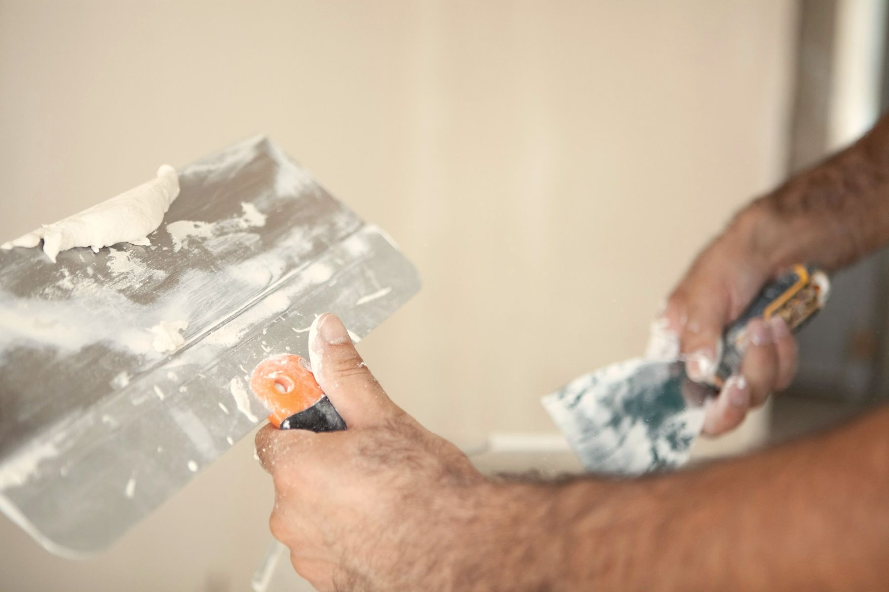
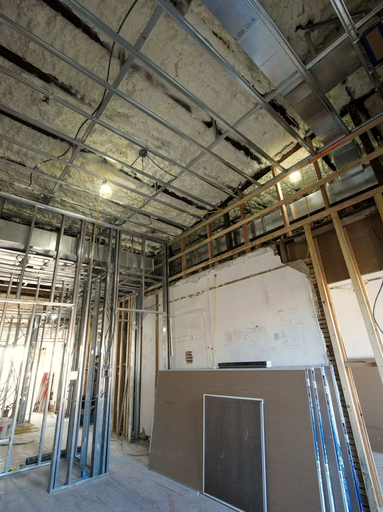

Plâtrerie et isolation, des murs bien finis.
Isolation des murs, rampants et plafonds, cloisons et finitions. Une petite équipe de la montagne thiernoise, et le gérant au bout du fil.



Du mur brut à la pièce prête à peindre.
Trois savoir-faire qui se suivent sur un même chantier, menés par la même équipe.


Isoler par l'intérieur, avec une entreprise RGE.
Darras Finition figure dans l'annuaire officiel des professionnels RGE pour l'isolation par l'intérieur. C'est la mention qu'on vous demandera pour la plupart des aides à la rénovation.
- Murs isolation par l'intérieur
- Rampants de toiture combles aménagés
- Plafonds sous combles perdus ou sous plancher
Les aides dépendent de votre situation : le détail se voit au moment du devis.
Quatre étapes, sans surprise.
Un chantier de plâtrerie se prépare avant de se faire. Voici le déroulé, du premier appel aux finitions.
Vous appelez
Ou vous écrivez. Cédric prend le temps de comprendre le projet.
Visite et mesures
On regarde l'existant : supports, humidité, épaisseurs possibles.
Devis détaillé
Poste par poste, avec les matériaux et le délai annoncé.
Chantier propre
Pièces protégées, travaux suivis, surfaces livrées prêtes à peindre.
Une petite équipe, un seul interlocuteur : le gérant en direct, du devis à la dernière couche d'enduit.
Cédric Darras a créé Darras Finition en novembre 2019 à Celles-sur-Durolle. [Parcours et années de métier à compléter avec Cédric.]
- Création
- Nov. 2019
- Équipe
- 3 à 5
- Siège
- 63250
Autour de Celles, dans la montagne thiernoise.
Avant de nous appeler.
Isolation par l'intérieur ou par l'extérieur ?+
Par l'intérieur, on ne touche pas à la façade : c'est souvent la solution en maison de bourg, en mitoyenneté ou quand la façade est à conserver. On en parle à la visite selon votre maison.
Combien coûte un devis ?+
Le devis est établi après une visite, pour chiffrer sur des mesures réelles. [Gratuité à confirmer avec Cédric.]
Ai-je droit à des aides ?+
Pour l'isolation, les aides publiques demandent en général une entreprise RGE, ce qui est le cas de Darras Finition. Le montant dépend de vos revenus et des travaux : on vous oriente lors du devis.
Combien de temps dure un chantier ?+
Cela dépend de la surface, du support et des temps de séchage des enduits. Le délai est écrit dans le devis, avant de commencer.
Faut-il vider la pièce ?+
Idéalement oui. Ce qui reste est protégé avant le début des travaux. On organise ça ensemble lors de la visite.

Un projet de rénovation ? Parlons-en.
Décrivez vos travaux en deux minutes, ou appelez directement Cédric.